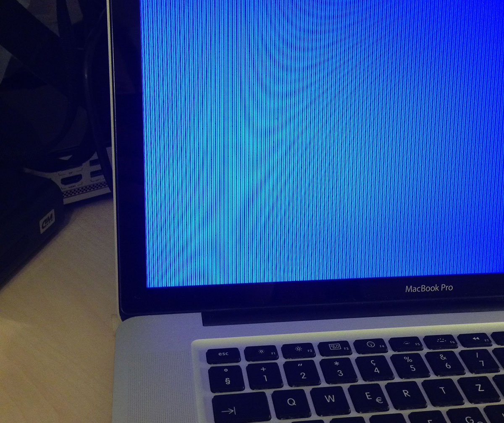

How I resurrected my MacBook Pro by putting it in the oven
One late night I opened up my trusty MacBook Pro only to find it turned off. "That's odd, I never turn it off. Must have ran out of battery or something". Without a further thought, I pressed the power button and the computer promptly started booting up. Since I had an SSD, this process would only take a few moments... but not this time. This time it got stuck in the "gray screen with slightly darker gray Apple logo phase".
"Ok, let's try it one more time buddy, come on, I know you can do it" I tried again, only to be presented by the inevitable gray apple logo, mockingly pointing at me, as if to say "this is what you get for fiddling with my insides".
Much hope was lost, when a combination of safe boots and PRAM resets resulted in what could only be described as the Mac equivalent of the Blue Screen Of Death.
Even after having spent the whole day scavenger-hunting through the Apple support site and reading pages upon pages of obscure forums with people having apparently similar but in reality completely unrelated problems, I didn't give up. Having tried every trick in the book, there was only one thing left to do: cook the Books. Yes, I literally took the broken laptop and shoved it in a hot kitchen oven for what felt like an eternity.
Putting broken electronics in the oven and magically fixing them is not exactly a new concept for the PC overclocking crowd. And I wasn't a stranger to it either. I've successfully done this process before with a borked Nvidia graphics card, but somehow doing the same thing on a $2000 laptop still felt weird. Truth be told, at the time I was confident it would work. AND IT DID! (for now)
So here is the recipe for a home-baked MacBook Pro:
Ingredients
- Freshly broken MacBook
- Lack of AppleCare™
- Lack of Care™
Tools you will need
- Regular home oven
- All kinds of weird screwdrivers from amazon
- Aluminium foil
- Proper re-assembly guide
- Patience and steady hand
Preparation
- Take out all the screws and throw them in the same pile (for easier access later). You should be left with only the faulty component: the logic board.
- Take the logic board and place it on little legs made out of aluminum foil. Place the Frankenstein's-monster-robot on a baking tray.
- Shove the tray in a preheated oven at 170° Celsius. For a perfectly golden and crunchy crust make sure you leave it in there for precisely around 7 minutes. Note: this voids the warranty.
-
Stare nervously at your expensive piece of machinery slowly roasting, only breaking eye contact every 10-20 seconds to check your watch for the time.
-
Take out the device using an oven mitten (important!) and let it cool off. If you are religious in any way, this is the moment to do your thing.
- Place all the pieces back into its aluminium body (except for that one screw) and watch as your beloved companion is raised from the dead!
Disclaimer: Although I have not yet experienced this myself, it is known that Zombie-like behaviour might develop and your friend might relapse back into an unusable state. Following the procedure again might help in some cases, but the fix is mostly temporary. Your best bet is to buy yourself a new one. Also, I am obviously not responsible for anyone trying this and burning their house down or worse. Cheers!
Why does it work? Check out the discussion on HackerNews.
#MBP2011 is a thing.
UPDATE: Apple is now offering a repair program.